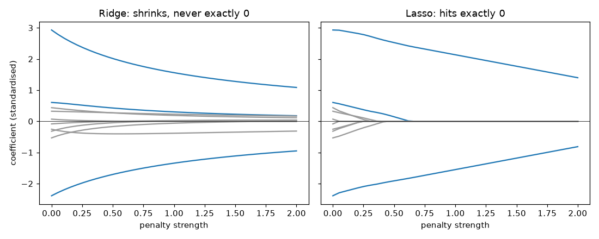

You have 40 recently sold houses and 10 measurements per house (floor area, rooms, age of the roof, distance to the station, and so on). You fit a regression to predict the sale price. It looks wonderful on the 40 houses and then fails on the next batch of listings. This is overfitting: the model learned the noise, not the pattern. In this chapter you learn the two cures used every day in data work. The first is regularization, which gently punishes big coefficients (ridge, lasso, elastic net). The second is model selection, which gives honest scores to compare models (cross-validation, AIC, BIC). By the end you will fit all of them with plain NumPy, read the coefficient paths, and pick a penalty with cross-validation. We assume you know ordinary least squares (OLS) and the bias-variance idea from the earlier regression material. For the calculus of the loss function and the L1/L2 norms, see the Math PDF.
Running example: 40 training houses, 10 standardised features. Only the first 3 features truly matter (true effects 3, -2, 1.5). The other 7 are pure noise. The noise in the response has standard deviation 3, so the best possible test error is 3² = 9. We also keep 2,000 fresh houses as a test set. All numbers below come from code I ran (NumPy 2.5, Python 3; statsmodels is not installed here, so I wrote the formulas by hand, which is also better for learning).
| Word | Plain meaning | Example |
|---|---|---|
| Training error | Error on the data used to fit | 6.5 on the 40 houses |
| Test error | Error on new, unseen data | 11.6 on the 2,000 fresh houses |
| Bias | Error from a model that is too simple | A straight line through a curve |
| Variance | How much the fitted model changes if the training data changes | Coefficients jumping between samples |
| Overfitting | Low training error, high test error | Memorising |
| Hyperparameter | A setting you choose, not learned by the fit | The penalty strength λ |
Expected test error splits into three parts:
expected test error = bias² + variance + irreducible noiseThe irreducible noise (here 9) is the floor. You cannot beat it. Bias falls when the model is more flexible; variance rises. The best model sits in the middle.
Problem 7.1.1 Fit OLS with all 10 features on the 40 training houses. Compare training and test mean squared error (MSE).
| Formula | MSE = average of (actual − predicted)² |
|---|---|
| Compute | (from code) train MSE = 6.505, test MSE = 11.592 |
| Answer | The model looks 6.5 on its own data but is really 11.6 on new data. The gap of about 5 is the cost of overfitting. |
| Check | The noise floor is 9, and test MSE (11.6) is above it, as it must be. Training MSE (6.5) is below the floor, which is the sign of fitting noise. |
| Why it matters | Training error alone is a lie. Always measure on data the model never saw. |
Connection to the real job. Every ML model has this problem: trees (depth), neural nets (size, epochs), and regression (number of features). A regularization knob exists in all of them.
Applications
Check yourself
OLS minimises the residual sum of squares, RSS = Σ(yᵢ − ŷᵢ)². Ridge minimises:
RSS + λ × Σ βⱼ² (λ ≥ 0, the intercept is not penalised)The closed form is β̂ = (XᵀX + λI)⁻¹ Xᵀy. Adding λ to the diagonal also fixes the case where XᵀX cannot be inverted (columns that are copies of each other). Always standardise features first (subtract the mean, divide by the standard deviation), otherwise a column measured in bytes is punished differently from one measured in seconds.
Why is it called "ridge"? Adding λ on the diagonal of a matrix is like adding a ridge of values along it. Why L2? The penalty Σβ² is the squared L2 norm (see the Math PDF on norms).
Problem 7.2.1 (tiny numbers) One feature x = [1, 2, 3], y = [2, 4, 5]. Compute the ridge slope for λ = 0, 1, 2, 10. Centre the data first.
| Step 1 | Centre: x̄ = 2, ȳ = 11/3 = 3.667. So xc = [−1, 0, 1], yc = [−1.667, 0.333, 1.333]. |
|---|---|
| Step 2 | With one feature, β = Σ xc·yc / (Σ xc² + λ). Σ xc·yc = 1.667 + 0 + 1.333 = 3. Σ xc² = 2. |
| Step 3 | λ = 0: 3 / 2 = 1.5. λ = 1: 3 / 3 = 1.0. λ = 2: 3 / 4 = 0.75. λ = 10: 3 / 12 = 0.25. |
| Answer | The slope shrinks from 1.5 (OLS) toward 0 as λ grows, but never reaches 0. |
| Check | Code printed 1.5, 1.0, 0.75, 0.25. Same. |
| Why it matters | Every ridge coefficient is the OLS coefficient divided by a number larger than 1. It is a shrinkage. |
Problem 7.2.2 (realistic) On the running example, fit ridge for several λ and report the first 3 (real) coefficients and the test MSE. Here the penalty is λ Σβ² on standardised columns.
| λ | β₁ | β₂ | β₃ | Train MSE | Test MSE |
|---|---|---|---|---|---|
| 0 (OLS) | 2.93 | −2.39 | 0.60 | 6.505 | 11.592 |
| 1 | 2.86 | −2.34 | 0.60 | 6.513 | 11.367 |
| 5 | 2.62 | −2.16 | 0.57 | 6.682 | 10.823 |
| 20 | 2.02 | −1.71 | 0.43 | 8.086 | 10.947 |
| 50 | 1.41 | −1.22 | 0.26 | 11.120 | 13.034 |
| 200 | 0.57 | −0.51 | 0.07 | 18.349 | 18.840 |
Connection to the real job. sklearn.linear_model.Ridge (its alpha is this λ). Weight decay in PyTorch optimisers is the same idea. Ridge is the default when many features are all a little useful or are correlated.
Applications
Check yourself
minimise (1/2n) × RSS + λ × Σ |βⱼ|The name is an acronym: Least Absolute Shrinkage and Selection Operator. There is no closed form, but coordinate descent works: update one coefficient at a time while holding others fixed. The one-coefficient update uses the soft-threshold function:
S(ρ, λ) = sign(ρ) × max(|ρ| − λ, 0)Here ρ is the correlation of the feature with the current residual. If |ρ| is smaller than λ, the coefficient becomes exactly 0. (With standardised columns, the update is βⱼ = S(ρⱼ, λ).)
Problem 7.3.1 (tiny) Compute S(3, 1), S(−0.4, 1), S(1.5, 0.5).
| Step 1 | S(3, 1): |3| − 1 = 2, positive, keep the sign, so 2. |
|---|---|
| Step 2 | S(−0.4, 1): |−0.4| − 1 = −0.6, below zero, so max(…, 0) = 0. The answer is 0. |
| Step 3 | S(1.5, 0.5): 1.5 − 0.5 = 1.0. |
| Answer | 2, 0, 1.0. Code gave 2, −0.0 (which is zero), 1.0. |
| Why it matters | "Shrink by λ and clip at 0" is the whole mechanism. Small signals die, big signals lose λ. |
Problem 7.3.2 (realistic) Fit lasso on the running example (7 of the 10 features are noise).
| λ | Non-zero coefficients | β₁ | β₂ | β₃ | Test MSE |
|---|---|---|---|---|---|
| 0 (OLS) | 10 | 2.93 | −2.39 | 0.60 | 11.592 |
| 0.1 | 8 | 2.89 | −2.24 | 0.52 | 11.029 |
| 0.3 | 5 | 2.73 | −2.06 | 0.33 | 10.946 |
| 0.6 | 3 | 2.43 | −1.84 | 0.03 | 11.809 |
| 1.0 | 2 | 2.14 | −1.55 | 0 | 12.150 |
| 2.0 | 2 | 1.40 | −0.81 | 0 | 14.745 |

Each line is one coefficient (blue lines are the 3 real features, grey lines are noise). The x-axis is the penalty strength, from none on the left to strong on the right. The y-axis is the coefficient value. In the ridge panel, the lines glide smoothly toward 0 and never land. In the lasso panel, lines hit 0 and stay flat there. This is the difference in one image.
Why lasso gives exact zeros (the geometry, 2 coefficients)
β2 The loss contours (ellipses) grow from the OLS
| ridge: circle point until they touch the penalty region.
| lasso: diamond A circle is smooth: touches at a generic point.
---+--- <> A diamond has corners on the axes: ellipses
| usually touch a corner, where one β is 0.Connection to the real job. sklearn.linear_model.Lasso and LassoCV. Used for sparse models, feature screening, and sparse regression in genomics, text, and click-through data with thousands of columns.
Applications
Check yourself
minimise (1/2n) RSS + λ × [ α × Σ|βⱼ| + (1 − α)/2 × Σβⱼ² ]α = 1 is lasso; α = 0 is ridge; in between is elastic net. In coordinate descent the update becomes βⱼ = S(ρⱼ, λα) / (1 + λ(1 − α)) for standardised columns.
Problem 7.4.1 Build 60 rows with 5 features. Features 1 and 2 are both base + small noise (twins), and y = 3 × base + noise. Features 3-5 are noise. Fit lasso, elastic net (α = 0.5), and ridge, all with λ = 0.3.
| Compute | (from code): |
|---|
| Method | β₁ | β₂ | β₃ | β₄ | β₅ |
|---|---|---|---|---|---|
| Lasso (α = 1) | 2.85 | 0 | 0 | 0 | 0 |
| Elastic net (α = 0.5) | 1.47 | 1.31 | 0.03 | 0.08 | 0 |
| Ridge (α = 0) | 1.38 | 1.31 | 0.16 | 0.19 | 0.01 |
Connection to the real job. sklearn.linear_model.ElasticNet (alpha = λ, l1_ratio = α; the two libraries name them in opposite ways, so read the docs). It is the practical default when you do not know which of ridge or lasso is best.
Applications
Check yourself
Important: standardisation and any other data-driven step must be redone inside each fold, using only that fold's training part. Otherwise information leaks from the exam into the textbook ("data leakage").
Problem 7.5.1 5-fold CV for ridge on the 40 training rows (8 rows per fold). Which λ wins?
| λ | CV mean MSE | CV std across folds |
|---|---|---|
| 0.01 | 17.979 | 9.049 |
| 1 | 17.113 | 9.341 |
| 5 | 15.217 | 10.226 |
| 10 | 14.406 | 10.808 |
| 20 | 14.353 | 11.261 |
| 50 | 16.222 | 11.471 |
| 100 | 18.777 | 11.501 |
| 300 | 22.630 | 11.605 |
Problem 7.5.2 Leave-one-out CV (K = n) for a linear model has a shortcut: LOOCV = mean( (residualᵢ / (1 − hᵢᵢ))² ), where hᵢᵢ is the diagonal of the "hat matrix" H = X(XᵀX)⁻¹Xᵀ. For polynomial fits of degree 1 to 6 on 50 points (true curve is a parabola), the code gave LOOCV 1.607 (degree 1), 0.773 (degree 2), 0.788 (degree 3), 0.807 (degree 4), 0.836 (degree 5), 0.916 (degree 6).
| Answer | LOOCV is lowest at degree 2, the true degree. Higher degrees steadily get worse. |
|---|---|
| Why it matters | A cheap, exact CV for linear models: no refitting 50 times. |
Time series warning. Random folds break time order and leak the future. For forecasts use rolling-origin evaluation (Chapter 10). For grouped data (several rows per user) use group-aware folds.
Pipeline so it is refit within each fold.Connection to the real job. cross_val_score, RidgeCV, LassoCV, GridSearchCV in scikit-learn. Every model-comparison in an ML interview ends with "how did you validate?".
Applications
Check yourself
For a model with k estimated parameters, n rows, and maximised log-likelihood ℓ (higher means better fit; see MLE in the Math PDF):
AIC = 2k − 2ℓ
BIC = k × ln(n) − 2ℓLower is better. AIC charges 2 per parameter. BIC charges ln(n) per parameter, which is more than 2 once n > 7, so BIC prefers simpler models, especially in large data. For a linear regression with normal errors: ℓ = −(n/2) × (ln(2π × RSS/n) + 1) and k counts the coefficients plus one for the error variance.
Rule of thumb: a difference of more than about 2 in AIC is meaningful; more than 10 is strong. AIC aims at good prediction; BIC aims at finding the true model if it is among the candidates.
Problem 7.6.1 n = 50 points from the parabola y = 1 + 2x − 0.8x² + noise. Fit polynomial degree 1, 2, 3. Compute AIC and BIC from RSS.
| Formula | ℓ = −(n/2)(ln(2π·RSS/n) + 1); k = degree + 2. |
|---|---|
| Plug in (degree 2) | RSS = 34.19, n = 50, k = 4. 2π × 34.19 / 50 = 4.2964. ln(4.2964) = 1.4580. Add 1 = 2.4580. Times −25 = −61.45. |
| Compute | AIC = 2 × 4 + 2 × 61.45 = 130.89. BIC = 4 × ln(50) + 122.9 = 4 × 3.912 + 122.9 = 138.54. |
| All degrees (from code) |
| Degree | RSS | ℓ | AIC | BIC |
|---|---|---|---|---|
| 1 | 72.68 | −80.30 | 166.60 | 172.33 |
| 2 | 34.19 | −61.44 | 130.89 | 138.54 |
| 3 | 33.50 | −60.94 | 131.87 | 141.43 |
| 4 | 32.62 | −60.27 | 132.55 | 144.02 |
| 6 | 28.41 | −56.82 | 129.63 | 144.93 |
Connection to the real job. statsmodels results show .aic and .bic for OLS, GLMs, and ARIMA (Chapters 8 and 10). They compare models on the same data and same response only. You cannot compare AIC from different datasets.
Applications
Check yourself
| Step | What | Tool |
|---|---|---|
| 1 | Split off a test set and do not touch it | train_test_split |
| 2 | Standardise inside a pipeline | Pipeline + StandardScaler |
| 3 | Tune λ (and α) by K-fold CV on training data | RidgeCV, LassoCV, ElasticNetCV |
| 4 | Compare different model families by CV score; use AIC/BIC for nested likelihood models | CV, .aic, .bic |
| 5 | Refit on all training data, score once on the test set | .score |
| 6 | Report the test score with uncertainty (bootstrap, Chapter 3) | numpy |
scikit-learn pipelines against statsmodels here (statsmodels is not installed). The code above uses only NumPy so every number is real, but the library calls in the table are standard and should work as named. Check the argument names in your installed version.(XᵀX + λI)⁻¹Xᵀy; never exactly zero.| Item | Formula or call | Note |
|---|---|---|
| Ridge | β = (XᵀX + λI)⁻¹Xᵀy | Ridge(alpha=λ) |
| Lasso | `S(ρ, λ) = sign(ρ)·max( | ρ |
| Elastic net | S(ρ, λα) / (1 + λ(1 − α)) | ElasticNet(l1_ratio=α) |
| AIC / BIC | 2k − 2ℓ / k ln n − 2ℓ | model.aic, model.bic |
| LOOCV (linear) | mean((eᵢ / (1 − hᵢᵢ))²) | Hat matrix diagonal |
| CV | K folds, fit on K−1, score on 1 | cross_val_score |
1 (easy). Ridge with one centred feature has Σxc·yc = 8 and Σxc² = 4. What is β for λ = 0 and λ = 4? Answer: λ = 0: 8/4 = 2. λ = 4: 8/(4+4) = 1. The slope halves.
2 (easy). Compute S(−2.5, 1) and S(0.8, 1). Answer: S(−2.5, 1) = −(2.5 − 1) = −1.5. S(0.8, 1) = 0 because 0.8 < 1.
3 (easy). Model A has AIC 210.4 and model B has AIC 206.1 on the same data. Which is preferred and is the gap meaningful? Answer: B (lower). The gap is 4.3, more than 2, so it is meaningful support.
4. What is the output? A model has train MSE 2.0 and 5-fold CV MSE 9.5. What do you suspect? Answer: Overfitting. The model fits the training data far better than new data. Add regularization or reduce features.
5. n = 100, log-likelihoods: model 1 (k = 3) ℓ = −150; model 2 (k = 6) ℓ = −146. Compute AIC and BIC for both and say which each criterion picks. (ln 100 = 4.605.) Answer: AIC1 = 6 + 300 = 306; AIC2 = 12 + 292 = 304, so AIC picks model 2. BIC1 = 3 × 4.605 + 300 = 313.8; BIC2 = 6 × 4.605 + 292 = 319.6, so BIC picks model 1. They disagree: BIC is stricter.
6 (find the bug). A student standardises the full dataset with StandardScaler().fit_transform(X), then runs cross_val_score. What is wrong? Answer: The scaler saw the validation folds' mean and standard deviation, a small leak. Put the scaler in a Pipeline so it is fit within each fold.
7. A lasso model on 500 features keeps 12. A colleague says "these 12 are the causes of churn". Respond. Answer: Lasso picks a predictive subset, not causes. Correlated features may be dropped arbitrarily, and the set can change with a new sample. Check stability by refitting on bootstrap samples, and use causal reasoning (or an experiment) for causes.
8. For 5-fold CV the fold errors for a model are 10, 12, 9, 14, 15. Compute the mean, the standard deviation, and the standard error of the mean. Answer: Mean = 60/5 = 12. Deviations: −2, 0, −3, 2, 3; squares: 4, 0, 9, 4, 9 = 26. Sample variance = 26/4 = 6.5, SD = 2.55. SE = 2.55/√5 = 1.14.
9 (scenario). You have 200 rows and 300 features (more columns than rows). Can you run OLS? What do you do instead? Answer: OLS has no unique solution because XᵀX is singular (rank at most 200). Use ridge (adding λI makes it invertible), lasso, or elastic net, with λ chosen by CV.
10 (interview). Explain in 60 seconds why ridge shrinks coefficients but lasso zeroes them. Answer: Both add a penalty to the least-squares loss. L2's penalty gradient shrinks in proportion to the coefficient, so it approaches zero but never reaches it. L1's penalty pulls with constant force λ, so a coefficient whose data signal is weaker than λ is clipped to exactly zero (soft-threshold). Geometrically, the L1 ball is a diamond with corners on the axes.
11 (interview). When would you choose BIC over AIC, and when CV over both? Answer: BIC when you want a simpler, more interpretable model or you have lots of data and believe a simple true model exists. AIC for prediction-focused choices. CV when the model is not a likelihood model (trees, neural nets), when the assumptions behind the likelihood are doubtful, or when you want a direct estimate of prediction error.
You are my patient, practical professor. I am a working professional moving into data roles. Teach me ridge regression and the bias-variance trade-off step by step. Use a tiny dataset with 5 numbers first, then a NumPy example with 10 features where only 3 matter. Show why training error always falls but test error is U-shaped as the penalty changes. Check my understanding with 4 short questions, one at a time, before moving on.
You are my patient, practical professor. I am a working professional moving into data roles. Explain lasso, the soft-threshold function, and coordinate descent, with the diamond-versus-circle geometry in words. Then explain elastic net and when it beats lasso on correlated features. Give me 8 graded exercises with small numbers, WITHOUT solutions, and wait for my answers before you correct them.
You are my patient, practical professor. I am a working professional moving into data roles. Quiz me one question at a time on K-fold cross-validation, data leakage, the one-standard-error rule, and leave-one-out CV. After each answer, tell me what is right, what is wrong, and why. Include two questions about time series and grouped data. Stop after 8 questions and give me a score.
You are my patient, practical professor. I am a working professional moving into data roles. Review my model-selection work: [PASTE HERE]. Check whether I standardised inside the folds, whether I compared AIC or BIC on the same data, whether I read the cross-validation spread honestly, and whether my conclusions about feature importance are justified. List each mistake and show a corrected version.
You are my patient, practical professor. I am a working professional moving into data roles. Run a mock interview on regularization and model selection: ridge versus lasso, elastic net, AIC versus BIC, cross-validation pitfalls, and overfitting. Ask one question at a time, wait for my answer, then give a score out of 10 and a model answer in simple English. Ask 8 questions, from easy to hard.